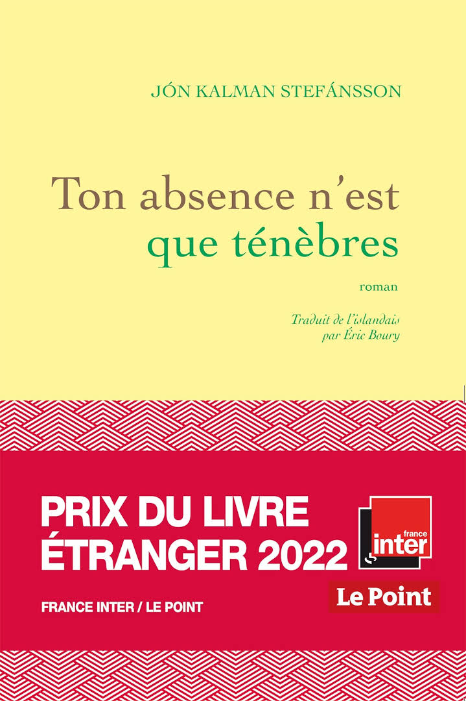
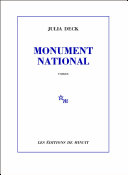

Post unique
Ton absence n'est que ténèbres

Jon kalman stefansson,Grasset, 5 janv. 2022
Ton absence n’est que ténèbres frappe par son ampleur, sa construction et son audace : le nombre de personnages, les époques enjambées, la puissance des sentiments, la violence des destins – tout semble superlatif dans ce nouveau roman de Jón Kalman Stefánsson. Les récits s’enchâssent les uns dans les autres, se perdent, se croisent ou se répondent, puis finissent par former une mosaïque romanesque extraordinaire, comme si l’auteur islandais avait voulu reconstituer la mémoire perdue non pas d’un personnage mais de l’humanité tout entière. Le résultat est d’une intensité incandescente.
back to blogMonument national

Julia Deck,6 janv,2022
Il y a les jumeaux, la demi-sœur. Quant à l’argent, il a été prudemment mis à l’abri sur des comptes offshore. Au château, il y a aussi l’intendante, la nurse, le coach, la cuisinière, le jardinier, le chauffeur. Méfions-nous d’eux. Surtout si l’arrêt mondial du trafic aérien nous tient dangereusement éloignés de nos comptes offshore
back to blog